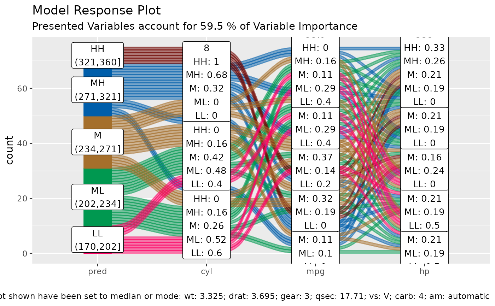

alluvial plots are capable of displaying higher dimensional data
on a plane, thus lend themselves to plot the response of a statistical model
to changes in the input data across multiple dimensions. The practical limit
here is 4 dimensions. We need the data space (a sensible range of data
calculated based on the importance of the explanatory variables of the model
as created by get_data_space and the predictions
returned by the model in response to the data space.
alluvial_model_response(
pred,
dspace,
imp,
degree = 4,
bin_labels = c("LL", "ML", "M", "MH", "HH"),
col_vector_flow = c("#FF0065", "#009850", "#A56F2B", "#005EAA", "#710500", "#7B5380",
"#9DD1D1"),
method = "median",
force = FALSE,
params_bin_numeric_pred = list(bins = 5),
pred_train = NULL,
stratum_label_size = 3.5,
...
)vector, predictions, if method = 'pdp' use
get_pdp_predictions to calculate predictions
data frame, returned by
get_data_space
dataframe, with not more then two columns one of them numeric containing importance measures and one character or factor column containing corresponding variable names as found in training data.
integer, number of top important variables to select. For plotting more than 4 will result in two many flows and the alluvial plot will not be very readable, Default: 4
labels for prediction bins from low to high, Default: c("LL", "ML", "M", "MH", "HH")
character vector, defines flow colours, Default: c('#FF0065','#009850', '#A56F2B', '#005EAA', '#710500')
character vector, one of c('median', 'pdp')
sets variables that are not displayed to median mode, use with regular predictions
partial dependency plot method, for each
observation in the training data the displayed variable as are set to the
indicated values. The predict function is called for each modified
observation and the result is averaged, calculate predictions using
get_pdp_predictions
. Default: 'median'
logical, force plotting of over 1500 flows, Default: FALSE
list, additional parameters passed to
manip_bin_numerics which is applied to the pred
parameter. Default: list( bins = 5, center = T, transform = T, scale = T)
numeric vector, base the automated binning of the pred vector on the distribution of the training predictions. This is useful if marginal histograms are added to the plot later. Default = NULL
numeric, Default: 3.5
additional parameters passed to
alluvial_wide
ggplot2 object
this model visualisation approach follows the "visualising the model in the dataspace" principle as described in Wickham H, Cook D, Hofmann H (2015) Visualizing statistical models: Removing the blindfold. Statistical Analysis and Data Mining 8(4) <doi:10.1002/sam.11271>
df = mtcars2[, ! names(mtcars2) %in% 'ids' ]
m = randomForest::randomForest( disp ~ ., df)
imp = m$importance
dspace = get_data_space(df, imp, degree = 3)
#> Warning: There was 1 warning in `mutate()`.
#> ℹ In argument: `cyl = (function (f, na_level = "(Missing)") ...`.
#> Caused by warning:
#> ! `fct_explicit_na()` was deprecated in forcats 1.0.0.
#> ℹ Please use `fct_na_value_to_level()` instead.
#> ℹ The deprecated feature was likely used in the easyalluvial package.
#> Please report the issue to the authors.
pred = predict(m, newdata = dspace)
alluvial_model_response(pred, dspace, imp, degree = 3)

# partial dependency plotting method
if (FALSE) {
pred = get_pdp_predictions(df, imp
, .f_predict = randomForest:::predict.randomForest
, m
, degree = 3
, bins = 5)
alluvial_model_response(pred, dspace, imp, degree = 3, method = 'pdp')
}